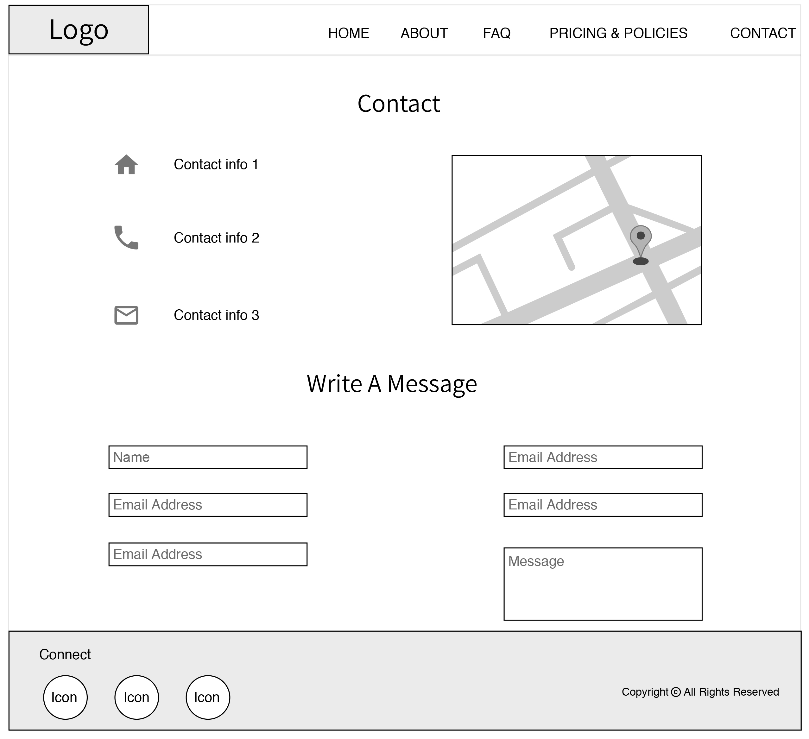

UX Case Study
Re-design Sanskruti Music School website
Re-design Sanskruti Music School website, for users to view quick profile snapshot of the teacher and what services she offers. Create the website visually interesting for music lovers and give a professional impression of the teacher including payment method.
Website Objectives:
Trust and Inspire: The website’s main purpose would be to give a sense of trust and commitment of quality music lessons to the visitors.
Professional impression: Create a page to outline classes rates, age group and teaching police.
Current strategy:
The current website does not have more information about the teacher and not compelling to users who are interested in music. Also pricing and policies are not clearly organized such as classes rates, age group,teaching polices and payment methods to give professional impression.
People know about this music classes through Social networking sites and friend circle only. To make people aware of this music classes we can apply SEO to the website and design leaflets about the music classes.
Website aimed at users :
- Interested in Music
- Parents whose children are interested in music.
Assumptions:
- Users visit these types of sites during weekends.
- Users make instantaneous assessments about the classes by the looks and content of the website.
- Users are apt to refer the site to other colleagues/parents.
- Users will likely make more than one visit to the site before making contact with the instructor.
- Users will be looking for tutors background through reviews or testimonial.
- Users will be from different part of the world, as music lessons are offered in Skype as well.
User Research, Diagnosis and Analysis
Research is based on short interviews with 6 users who are interested in music classes.
Key Findings
- Most of the users will prefer to come to the website during weekends as they are all working on weekdays.
- Many users will come to the website because they are interested in music classes and they were refer by relatives or friends.
- Mixed opinion about viewing website in mobile or any other platform.
- Every user will first look for rates and timing of the classes.
- Many are interested in going to music classes in person rather than Skype classes. Only one user is willing to attend Skype classes if he did not find the particular music lessons in near by location.
- Most users do not care about the looks of the website but all user would like to read about music tutor past experience in music and her performances. All users want to see video, images or a tour of music class room where teacher or students performing.
- Some suggested to add registration form and online payment option for user convenience.
Summary
From the above findings we can conclude that “Sanskuruti Music School” website should have pricing, timing and nature of the music classes provided by the teacher. Many of the users would like to know about the teacher experience and background. Display of the education, awards and recorded video snippets would certainly engage the targeted audience visiting the website.Online payment option is one of the most sought out services that the people would like to have in the website.
UX Strategy
Strategy Statement : To give a sense of trust and commitment of quality music lessons to visitors and make online payment easy and accessible for students.
(Focus on website user who are looking for nature of the music classes provided by the teacher and contact detail)
- Focus on displaying what type of music lessons teacher is proving along with contact detail clear and loud.
- Focus on writing a short description about teacher experience and background in music.
- Focus on presenting the quality of music lessons offered in the school by displaying some images and videos of student performances.
- Make the online payment easy and visible for the users who are students of Sanskruti Music school.
Design Principles
- Keep the design simple yet visually compelling.
- Make contact number loud and clear in the homepage.
- Provide a section in the homepage to highlight teacher qualifications in music, history of teaching music and performances in various places.
- Display some parents and students testimonials for building trust.
- Present the pricing and policies clear and online payment button easy and accessible.
- Add a page of address and concerns and what type of music lessons offered.
- Ensure to provide detail contact information and location of the music classes.
Based on the above research and key findings, below is the propose changes to the website.
HOMEPAGE :
Include a short bio mentioning teacher name and a professional headshot. To integrate a bit of visual interest on the Homepage, add a video, some images. Think: a tour of your music school studio rooms, yourself or your students performing, for example.

ABOUT:
List out teacher qualifications such as music education, history of teaching music and performances in various places. Making use of some parent or student testimonials here is a nice touch, as well.
FAQ:
Address concerns and also write more about what the teacher offers.
PRICING & POLICIES
Create a page to outline classes rates, age group and teaching police.
PAYMENT
Create Paypal button in the website to accept payment online.
CONTACT
A clear Contact page is a great way to encourage people to get in touch for more information about your music classes. Include phone number or email for people who want to discuss details. Also include physical address as well. Add an HTML feature to embed a Google Map of your location, making it clear where you are in the city.
